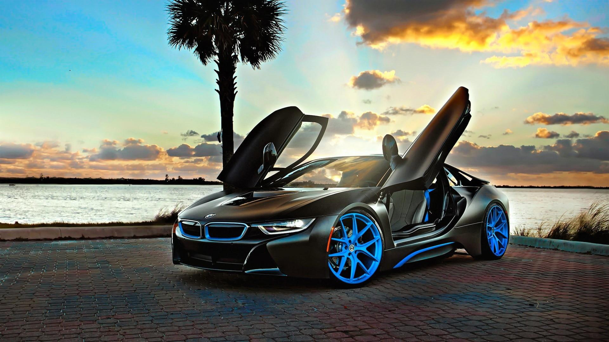

Bayerische Motoren Werke AG, abbreviated as BMW, is a German multinational manufacturer of luxury vehicles and motorcycles headquartered in Munich, Bavaria, Germany. The company was founded in 1916 as a manufacturer of aircraft engines, which it produced from 1917 to 1918 and again from 1933 to 1945.
Mercedes-Benz, commonly referred to as Mercedes and sometimes as Benz, is a German luxury and commercial vehicle automotive brand established in 1926. Mercedes-Benz AG is headquartered in Stuttgart, Baden-Württemberg, Germany.

Rolls-Royce Holdings plc is a British multinational aerospace and defence company incorporated in February 2011. The company owns Rolls-Royce, a business established in 1904 which today designs, manufactures and distributes power systems for aviation and other industries.